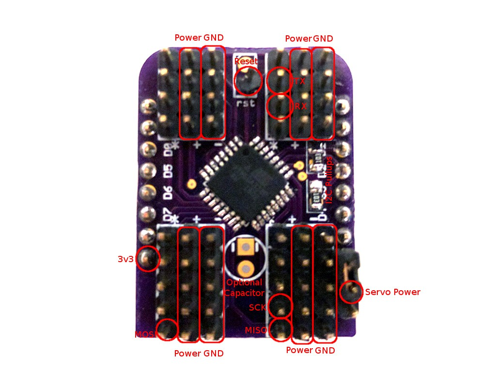

Shield Anatomy¶
Published on 2016-09-15 in Servo Breakout for WeMos D1 Mini.
Since this board is so packed (18 servo sockets take a lot of space), I couldn’t fit all the labels on it. So a bit of a legend is necessary:
The MISO, MOSI, SCK, RST, 3V3 and GND pins are needed for programming the chip after it’s assembled. I’m just connecting the USBASP programmer to them and use the Arduino IDE with the Lilypad board selected. Then you also need to set the fuses with Avrdude:
avrdude -c usbasp -p m328p -U lfuse:w:0xE2:m -U hfuse:w:0xDF:m
to switch it from 1Mhz to 8Mhz. That’s it, you can disconnect the programmer and use your new shield. Oh, before you program it, remember to add the resistor for the RST pullup on the back of the board. 10kΩ should be fine.You have two options for powering the servos. You can either connect the servo power pin to the 5V pin next to it, and power them from the same source as your D1 Mini, or you can use a separate power.
The order of the servo sockets on the board is pretty much random – whatever was easiest to route. I suppose I could fix it in software, but for now I didn’t even figure out yet which socket is which.
Ah, I also figured out why it didn’t work with larger frequencies of i2c bus with esp8266 – the fault is on the side of the esp8266 micropython, and its lack of support for clock stretching. A pull request is submitted to fix it.